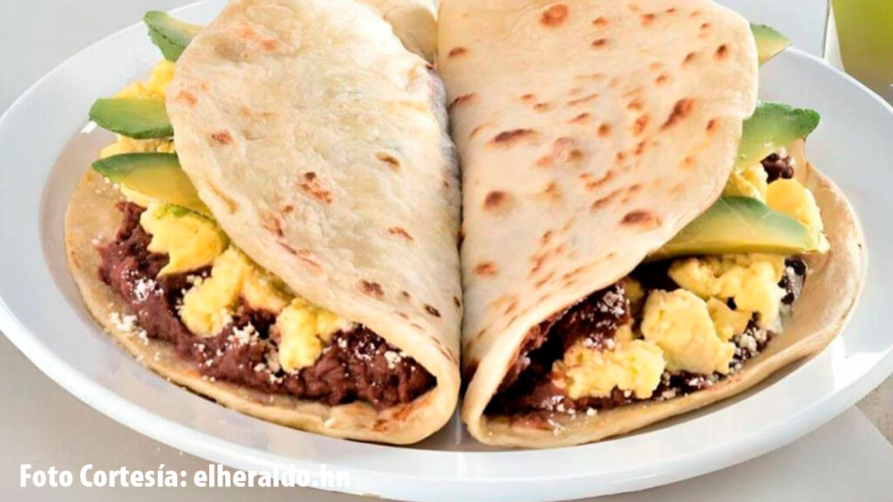

Gastronomia Hondureña
La gastronomía hondureña es una mezcla de
influencias indígenas, españolas y africanas,
que se refleja en la variedad de platos típicos
del país. Algunos de los platos más
representativos son:
1.Baleadas
Las baleadas son un plato típico de Honduras
que consiste en una tortilla de harina rellena
de frijoles refritos, queso rallado y crema.
Se pueden agregar otros ingredientes como
huevo, aguacate o carne.

2.Desayuno Hondureño
El desayuno es muy importante en Honduras,
donde la gente suele levantarse con el
sol. A menudo es la comida más importante
del día y se consume temprano para tener
energía para una larga jornada.
Normalmente, el desayuno incluye huevo
fritos, frijoles fritos, plátanos fritos,
tortillas de maíz, aguacate, queso,
mantequilla, crema agria, quizás
mermelada si se sustituyen las tortillas
por tostadas, así como jugo de naranja
y café fuerte.

3.Plato Tipoco
Aunque su nombre no lo delate, el plato
típico es el plato nacional de Honduras.
Básicamente, consiste en salchichas de
res y cerdo marinadas y asadas,
acompañadas de chicharrón de cerdo,
repollo marinado, crema agria, queso,
plátano frito, frijoles fritos,
rebanadas de aguacate y una montaña de
tortillas.
Este plato se puede realzar con chimol,
una salsa de tomate que también incluye
maíz picado, cebolla verde y jalapeños.
Si solo vas a probar un plato hondureño,
que sea este.

4.Sopa de Mariscos
La sopa de mariscos se encuentra en los
menús de toda la costa y las islas de
la bahía. Los mariscos, que pueden ser
cualquier combinación de caracola,
almejas, mejillones, cangrejo desmenuzado
y camarones, se cocinan en leche de coco
que le aporta profundidad y dulzura.
También se pueden añadir verduras, maíz
y yuca. La sopa se cocina rápidamente
en lugar de hervirla durante horas, lo
que la mantiene fresca, sabrosa y llena
de nutrientes. A veces, la sopa de
mariscos se sirve con arroz, lo que garantiza
que no quede ni una gota.

5. Pescado Frito
El pescado frito se come con chips de
plátano frito y plátanos fritos. A veces,
se le añade arroz con frijoles.
Aunque se trata de un plato sencillo,
nada supera al pescado fresco del mar
de esa misma mañana. El pargo, el mahi
mahi y el pez león son muy populares.
El pez león, por cierto, es el pescado
más ecológico que se puede consumir
en el Caribe. Es una especie invasora
sin depredadores, por lo que se
fomenta su pesca. Afortunadamente,
también es delicioso, delicado,
ligero y de textura hojaldrada.
Si el pescado aparece en el menú como
“yojoa”, se trata de una especie de agua
dulce del Lago de Yojoa, marinada
durante toda la noche con sal y
especias, frita y servida con col
encurtida, cebollas encurtidas y
rodajas de lima.